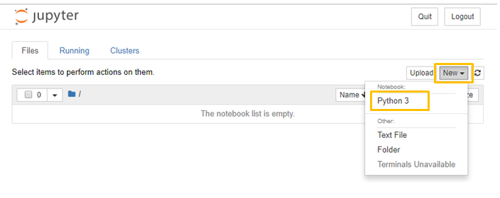
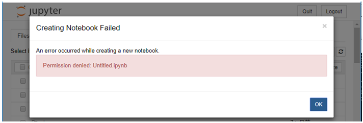

| 更新: |
エラーメッセージ: An error occurred while creating a new notebook.
最善の対処方法ではないかもしれませんが、
Windows + Jupyter Notebook を使い始めていきなり躓きましたので、参考になればと思い公開しました。
Microsoft Windows [Version 10.0.17134.407]
C:\>python --version
Python 3.7.1
C:\>ipython --version
7.2.0
C:\>jupyter --version
4.4.0
仮想環境は作成していません。
コマンドプロンプトで、次のように Jupyter Notebook を起動しても、新しいファイルを作成できない。
C:\>jupyter notebook

New → Python3 とすると、下の画面が表示されて、新しいファイルを作成できない。

C:直下で起動したことが原因です。C:\>jupyter notebook
C:直下には、ファイルの作成権限が無いため作成できません。
対策としては、カレントディレクトリを別のディレクトリ (少なくともルートは不可) に移動してから Jupyter Notebook を起動します。
例えば、次のようにして起動します。
この場合、C:\work の直下にノートブックが作成されます。
C:\>cd work
C:\work>jupyter notebook
以上